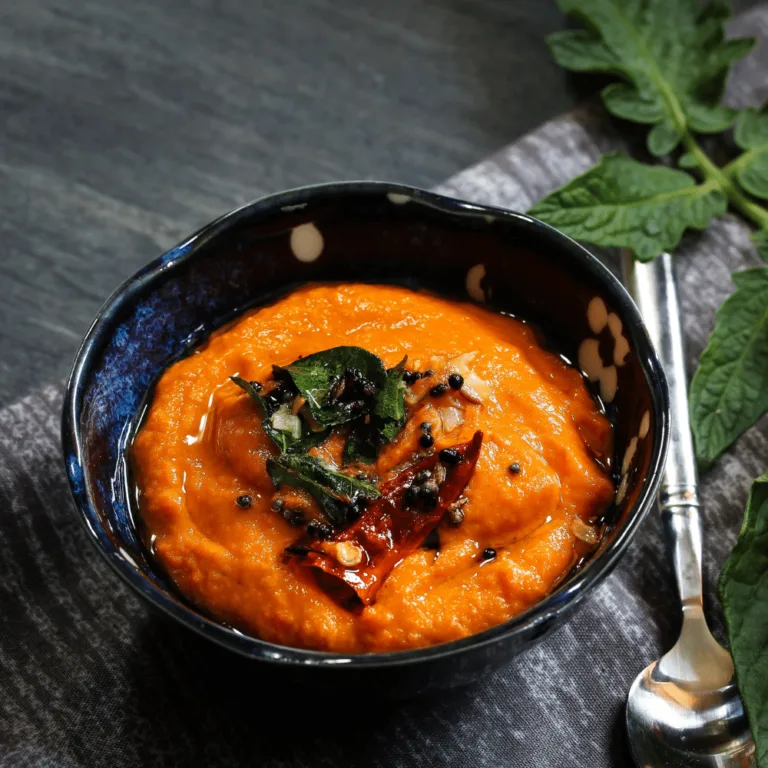

How to make a side of Chutney

Description
I don't even know what this is but I googled things to go with our delicious popovers so here you are.
Enhance the enjoyment of your popovers with a flavorful and tangy spiced fruit chutney. This chutney is a perfect accompaniment that adds a burst of sweet, spicy, and tangy flavors to complement the light and airy popovers. With a combination of fruits, aromatic spices, and a hint of acidity, this chutney will elevate your popover experience to a whole new level.
Ingredients
- 2 cups mixed fruits (such as apples, pears, peaches, or mangoes), peeled and diced
- 1/2 cup brown sugar
- 1/4 cup apple cider vinegar
- 1/4 cup raisins
- 1/4 cup chopped red onion
- 1/4 teaspoon ground ginger
- 1/4 teaspoon ground cinnamon
- 1/4 teaspoon ground cloves
- 1/4 teaspoon red pepper flakes (optional, for a touch of heat)
- Pinch of salt
Instructions
- In a medium-sized saucepan, combine the mixed fruits, brown sugar, apple cider vinegar, raisins, red onion, ground ginger, ground cinnamon, ground cloves, red pepper flakes (if using), and a pinch of salt.
- Place the saucepan over medium heat and stir to combine all the ingredients.
- Bring the mixture to a gentle boil, then reduce the heat to low and let it simmer uncovered for about 30-40 minutes, or until the fruits have softened and the chutney has thickened.
- Stir occasionally during the cooking process to prevent sticking and to ensure the flavors are evenly distributed.
- Once the chutney has thickened to your desired consistency, remove the saucepan from the heat and let it cool completely.
- Transfer the chutney to a clean, airtight jar or container. It can be refrigerated and stored for up to two weeks.
- Serve the spiced fruit chutney alongside warm popovers. The tangy and sweet flavors of the chutney will beautifully complement the popovers' texture and add a delightful zing to each bite.
Note: Feel free to adjust the spices and sweetness according to your taste preferences. You can also experiment with different combinations of fruits to create your unique flavor profile.
Enjoy your chutney, weirdo, and consider pairing it with our popovers for the perfect pairing of salty and sweet!